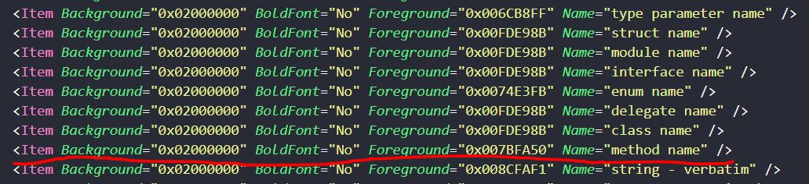
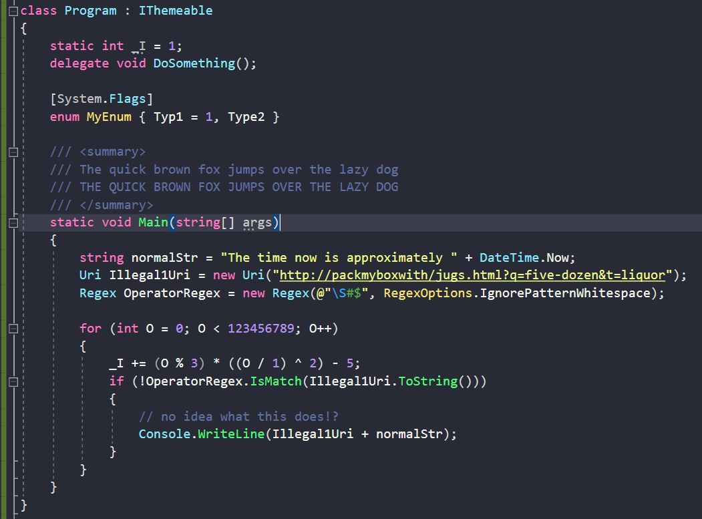
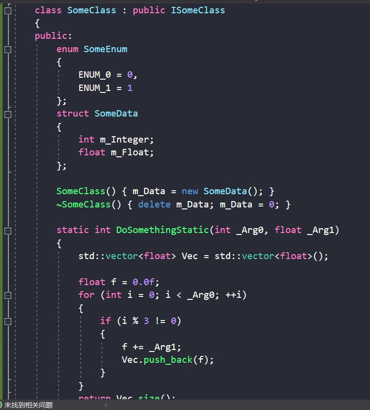

Dracula配色方案的下载与安装
Dracula是一款Dark（Deep）系的配色方案。点我下载
下载完成，会获得一个.vssettings文件。
照着Dracula官网的安装步骤，就可以顺利安装完成啦。
NOTE ：
这里还有一个很多人推荐过的网站，https://studiostyl.es/，里面有很多VS的配色，也支持在线编辑~
修改配色
Dracula的配色方案我很喜欢，但是有一点有点不顺心，就是函数名与变量名的颜色是一模一样的。
当很多变量与函数在一起的时候，不太容易分清楚。
而VS Code上的Dracula配色方案却没有这个问题，那就改进一下VS的配色吧。
修改.vssettings文件
这是一个XML文件，可以用编辑器打开，这里选用VS Code。
添加一行代码，如下图所示。找到method name，Foreground为字体颜色，我们修改这个就行了。
最终效果
C#
C++
